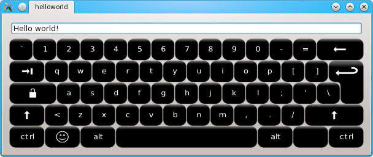

Florence Virtual Keyboard for Qt - Hello world tutorial
Files:
This tutorial provides step by step instructions to integrate Florence in a Qt application.
By the end of this tutorial you should be able to type Hello world! in a text input widget.
The source code of this tutorial is available in the Florence archive under the examples/helloworld directory.

Building Florence
The first thing to do is to build the widget library from the compressed archive.
This will create and install a shared library called libflorence_qt.so.
This library contains the keyboard widget.
If you want to use this widget in Qt Designer or Qt Creator IDE, you need to build the plugin target:
qmake -config plugin
make
sudo make install
This will build and install the library in the relevant directory for use with the UI Designer.
Preparing the project
Now that you have build the shared library, it is ready to be used in your application.
Create a directory to contain your application:
cd ..
mkdir tutorial
cd tutorial
Writing the input widget
The virtual keyboard widget will be used to input text in a line edit widget.
The line edit widget must have slots connected to the input signals of the virtual keyboard.
We will write a class that implements the slots to receive input from the keyboard.
The class inherits from QLineEdit and implements the insertText() and backspace() slots.
Create the header file called lineedit.h with this content:
#include <QLineEdit>
class LineEdit : public QLineEdit
{
Q_OBJECT
public:
LineEdit( QWidget *parent = 0 );
public slots:
void insertText( const QString &text );
void backSpace();
};
The insertText slot will be called to insert the text input from the keyboard.
The backspace slot is used to delete the character before the cursor.
Create the source file called lineedit.cpp with the following class implementation:
#include "lineedit.h"
LineEdit::LineEdit( QWidget *parent )
: QLineEdit( parent )
{
}
void LineEdit::insertText( const QString &text )
{
insert( text );
}
void LineEdit::backSpace()
{
backspace();
}
That's it. Our LineEdit widget is ready to receive input from the keyboard.
Integrating Florence with the input widget in a QApplication.
Now that the input widget is ready, we just need to instantiate it in a QApplication and to connect it to a Florence widget. Create a file called main.cpp with that content:
#include <QtGui/QApplication>
#include <QVBoxLayout>
#include "lineedit.h"
#include "florence.h"
int main(int argc, char *argv[])
{
QApplication a(argc, argv);
QWidget *widget = new QWidget();
widget->resize( 600, 230 );
LineEdit *input = new LineEdit( widget );
Florence *keyboard = new Florence( widget );
QObject::connect( keyboard, SIGNAL(inputText(QString)), input, SLOT(insertText(QString)) );
QObject::connect( keyboard, SIGNAL(backspace()), input, SLOT(backSpace()) );
keyboard->setFocusProxy( input );
QVBoxLayout *layout = new QVBoxLayout( widget );
layout->addWidget( input );
layout->addWidget( keyboard );
widget->setLayout( layout );
widget->show();
return a.exec();
}
- Instantiate our input widget:
LineEdit *input = new LineEdit( widget );
- Instantiate the virtual keyboard:
Florence *keyboard = new Florence( widget );
- Connect the input widget slots to the virtual keyboard's signals:
QObject::connect( keyboard, SIGNAL(inputText(QString)), input, SLOT(insertText(QString)) );
QObject::connect( keyboard, SIGNAL(backspace()), input, SLOT(backSpace()) );
- We must make sure our line edit widget does not loose the keyboard focus when the virtual keyboard is used or the cursor is no longer displayed. We do that by creating a focus proxy for the keyboard:
keyboard->setFocusProxy( input );
Building the application
Now we need to create a project file for our application.
Create a file named helloworld.pro with this content:
QT += svg xml
TARGET = helloworld
TEMPLATE = app
SOURCES += main.cpp lineedit.cpp
HEADERS += lineedit.h
INCLUDEPATH += ../src
LIBS += -lflorence_qt
QT += svg xml
TARGET = helloworld
TEMPLATE = app
SOURCES += main.cpp lineedit.cpp
HEADERS += lineedit.h
INCLUDEPATH += ../src
LIBS += -lflorence_qt
To build the application, you can now run those commands:
qmake
make
./helloworld
Learning more
You can customize the keyboard to make it look and behave the way you want.
You can compile and run the demo application located in the examples/demo directory to make yourself a better idea of the customization possibilities.
Check the reference documentation for a complete list of Florence's member methods and signals.